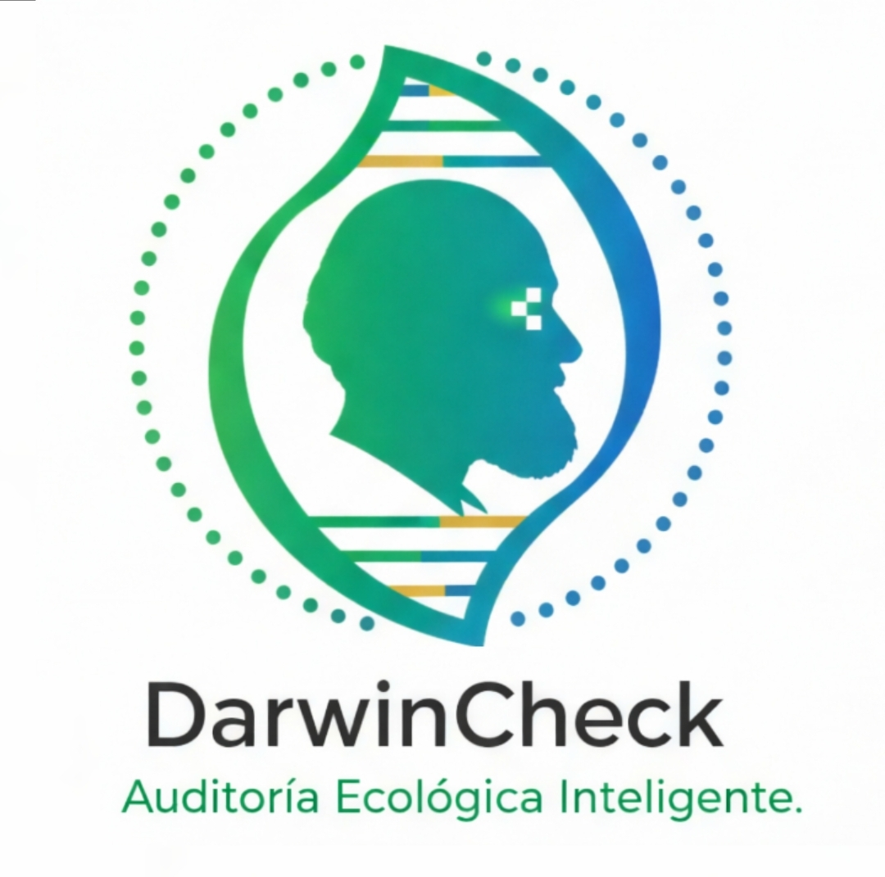

DarwinCheck
Validación automática de datos de biodiversidad
Revisión experta de planillas Darwin Core para proyectos ambientales y SEIA
⚠️ Muchos datasets de biodiversidad contienen errores en taxonomía o coordenadas.
Una revisión previa puede evitar observaciones regulatorias o problemas de calidad de datos.
Perfil Profesional
Soy Loreto, Bióloga titulada con Máxima Distinción por la Universidad de Concepción. Experta en asegurar la integridad de datos ambientales mediante soluciones de Ciencia de Datos.
Logro Tecnológico: App DarwinCheck
Hito: Plataforma web propia (R/Shiny + Docker) diseñada para la validación técnica de datos bajo el estándar Darwin Core.
La aplicación permite automatizar procesos críticos de auditoría:
- Validación Taxonómica: Detección inmediata de errores en nombres científicos y rangos biológicos.
- Control Geográfico: Verificación de coordenadas, formatos de ubicación y fechas fuera de rango.
- Cumplimiento Normativo: Asegura que los datos sigan los lineamientos exigidos por la SMA.
- Reporte de Errores: Identifica fallas que una revisión manual podría pasar por alto.
Probar Aplicación
Validación Técnica Externa
¿Aún requieres una revisión externa? Si prefieres una auditoría profesional personalizada para garantizar que tu planilla está 100% correcta antes de su entrega oficial, realizo la validación experta detallada.
Costo por Planilla: $50.000 CLP
Solicitar Revisión Profesional